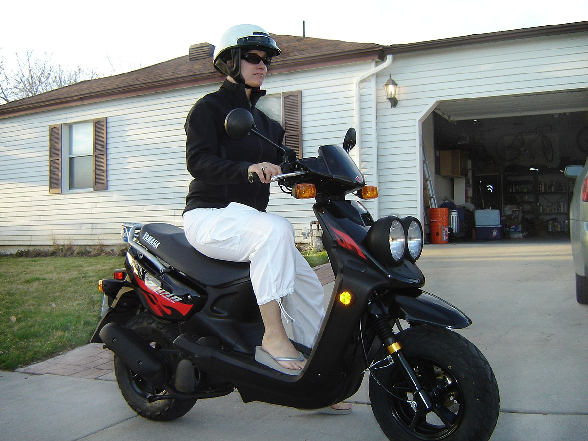

Mi az a robogó?
A robogó egy kis motorral és automata váltóval felszerelt kétkerekű jármű, amit főleg városi közlekedésre használnak.
Jellemzőik
- Kis hengerűrtartalmú motor
- Automata váltó
- Kétkerekű kialakítás
- Városi közlekedésre ideális
Népszerű robogó márkák
- Yamaha
- Honda
- Piaggio
- Vespa
- Kymco
Története
A robogó története a 20. század elejére nyúlik vissza. Az első robogószerű járművek az 1910-es években jelentek meg, de a modern robogó fejlődése a második világháború után gyorsult fel. A háború utáni Európában – különösen Olaszországban – olcsó, könnyen használható és gazdaságos közlekedési eszközökre volt szükség. Ekkor született meg két ikonikus márka: a Vespa (1946, Piaggio) és a Lambretta (1947), amelyek a robogó fogalmát népszerűvé tették világszerte.
A robogók különösen városi környezetben terjedtek el gyorsan, mivel kis méretük és alacsony fogyasztásuk ideálissá tette őket a zsúfolt utcákon. Az 1950-es és 60-as években a robogók a fiatalok körében is divatos közlekedési eszközzé váltak. Később Ázsiában, főként Japánban és Tajvanon, olyan gyártók, mint a Honda, Yamaha, Suzuki és Kymco vitték tovább a fejlődést, egyre modernebb és megbízhatóbb modelleket készítve.
Ma a robogók világszerte népszerűek, és egyre inkább elérhetők elektromos változatban is, környezetbarát megoldásként a városi közlekedésben.
Legismertebb Robogók
Vespa Primavera
Honda PCX 125
Yamaha NMAX 125
Piaggio Liberty 125
Kymco Agility 125
Kép egy robogórol
Kép: Yamaha Zuma
Yamaha_ZumaElőnyök és Hátrányok
| Előnyök | Hátrányok |
|---|---|
| Alacsony üzemanyag-fogyasztás | Korlátozott teljesítmény |
| Könnyű kezelhetőség | Időjárás-függő |
| Kiváló városi közlekedéshez | Kisebb csomagtér |